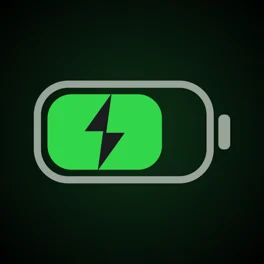

Turn your iPhone into a bedside clock while it charges
A phone on the nightstand can be more useful than a dark rectangle: a clock you can read without glasses, the charge level, and nothing that lights up the room. Here is how to set it up.
StandBy: the built-in way
Since iOS 17, an iPhone turns into a full-screen display when three things are true: it is charging, it is lying on its side, and it is locked. Apple calls this StandBy.
- Open Settings → StandBy and make sure it is on.
- Put the iPhone on a charger or a stand in landscape orientation and lock it.
- Swipe left and right to switch between widgets, photos and a full-screen clock; swipe up and down to change the clock style.
Night Mode in the same settings tints everything red in a dark room, so the screen doesn't light up the bedroom. On iPhones with an Always-On display, StandBy can stay on all night; on other models the screen turns off after a while and wakes up with a tap.
A bigger clock and the charge level: BigBattery
If you want the clock and the charge level on one screen, BigBattery is built for exactly that:
- a large clock above a battery that fills the screen,
- the screen stays awake while the phone is on the charger and locks as usual when you unplug,
- an alert when the charge reaches a level you choose, so you can unplug at 80 or 90%,
- Lock Screen widgets that also appear in StandBy.
Its charging mode can also turn on Low Power Mode with a shortcut while the phone charges.
Small things that help at night
- Use a stand. A MagSafe stand or a dock that holds the phone in landscape is what makes StandBy kick in.
- Turn brightness down in Control Center before bed, or rely on Night Mode.
- Use a Focus. A Sleep Focus keeps notifications from lighting up the screen.
Questions
Does StandBy work on every iPhone?
It needs iOS 17 or later. Keeping the screen on all night depends on an Always-On display.
Is BigBattery free?
Yes. It is free on the App Store, with no ads and no tracking.
